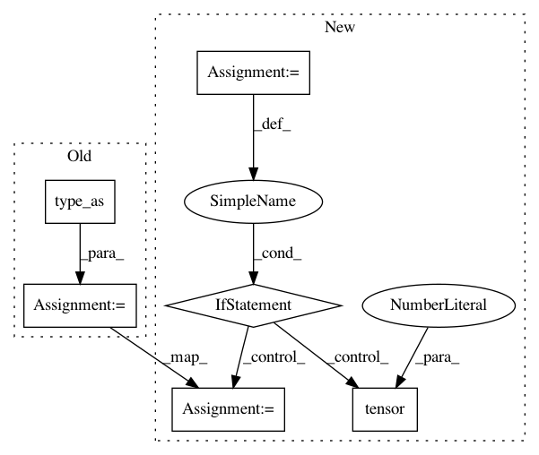

5a2f76ede044b4904af9461e18253f2929cfc5a4,fairseq/criterions/nat_loss.py,LabelSmoothedDualImitationCriterion,_compute_loss,#LabelSmoothedDualImitationCriterion#Any#Any#Any#Any#Any#Any#,29
Before Change
else: // soft-labels
losses = F.kl_div(logits, targets, reduction="none")
losses = losses.float().sum(-1).type_as(losses)
nll_loss = mean_ds(losses)
if label_smoothing > 0:
loss = nll_loss * (1 - label_smoothing) - mean_ds(logits) * label_smoothing
else:
loss = nll_loss
After Change
if masks is not None:
outputs, targets = outputs[masks], targets[masks]
if not masks.any():
nll_loss = torch.tensor(0)
loss = nll_loss
else:
logits = F.log_softmax(outputs, dim=-1)
if targets.dim() == 1:
losses = F.nll_loss(logits, targets.to(logits.device), reduction="none")
else: // soft-labels
losses = F.kl_div(logits, targets.to(logits.device), reduction="none")
losses = losses.sum(-1)
nll_loss = mean_ds(losses)
if label_smoothing > 0:
loss = nll_loss * (
1 - label_smoothing) - mean_ds(logits) * label_smoothing
else:
loss = nll_loss
loss = loss * factor
return {"name": name, "loss": loss, "nll_loss": nll_loss, "factor": factor}
def _custom_loss(self, loss, name="loss"):
In pattern: SUPERPATTERN
Frequency: 3
Non-data size: 6
Instances
Project Name: pytorch/fairseq
Commit Name: 5a2f76ede044b4904af9461e18253f2929cfc5a4
Time: 2019-10-23
Author: dnn@fb.com
File Name: fairseq/criterions/nat_loss.py
Class Name: LabelSmoothedDualImitationCriterion
Method Name: _compute_loss
Project Name: Microsoft/nni
Commit Name: c7d58033db0e25736d33406ed262cb5232d366e8
Time: 2020-02-09
Author: 38930155+chicm-ms@users.noreply.github.com
File Name: src/sdk/pynni/nni/compression/torch/pruners.py
Class Name: AGP_Pruner
Method Name: calc_mask